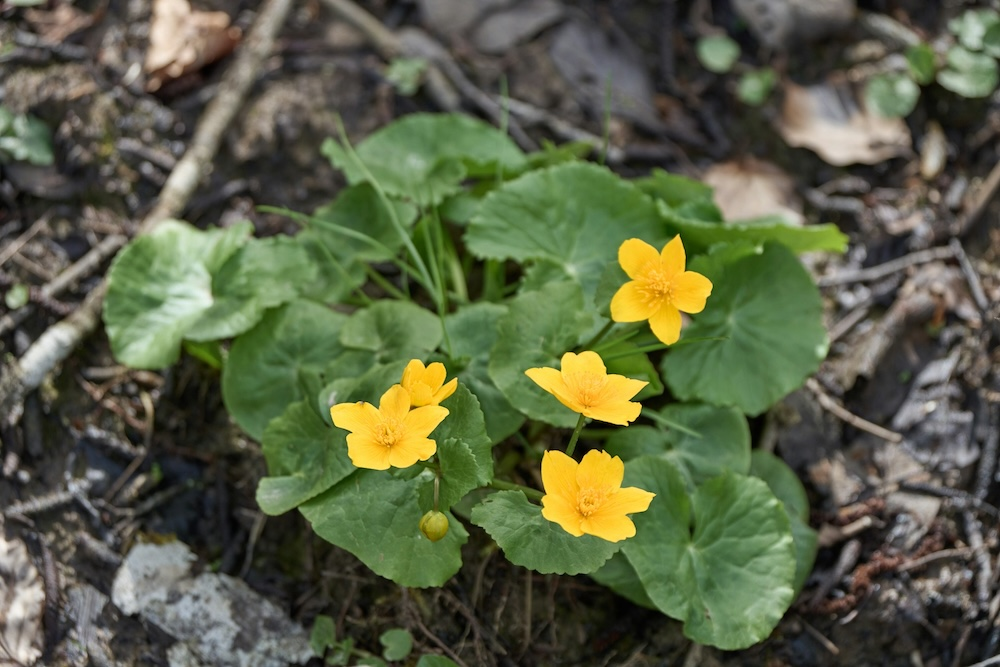

Gold am Wasser – ein Kelch, der kein Kelch ist.


Kein Kronblatt – ein botanisches Paradox
Was wir als goldgelbe ‚Blütenblätter' sehen, sind in Wirklichkeit Kelchblätter – die Sumpfdotterblume hat überhaupt keine Kronblätter entwickelt. Die Kelchblätter haben die Rolle der Kronblätter übernommen und sich entsprechend verändert: gross, auffällig, leuchtend gelb. Ein elegantes Beispiel, wie die Evolution dasselbe Ziel auf unterschiedlichen Wegen erreicht.
Zeigerin der Feuchtwiesen
Die Sumpfdotterblume zeigt an, was wir am meisten verloren haben: intakte Feuchtwiesen. Durch Entwässerung, Flussbegradigungen und intensive Landwirtschaft sind über 90% der mitteleuropäischen Feuchtwiesen verschwunden. Wo die Sumpfdotterblume noch in Massen blüht, ist ein wertvoller Rest erhalten – ein Schatz, den es zu hüten gilt.
Wissenswertes & Merksätze
Kein Kronblatt
Was wir sehen, sind Kelchblätter. Die Sumpfdotterblume hat keine echten Kronblätter entwickelt – die Kelchblätter machen alles alleine.
Feuchtwiesen-Indikator
Ihr Verschwinden ist einer der besten Indikatoren für Lebensraumverlust in Mitteleuropa – über 90% der Feuchtwiesen sind weg.
Giftig, aber historisch genutzt
Geschlossene Knospen wurden eingelegt wie Kapern – irrtümlich, denn sie sind giftig. Kochen zerstört das Gift teilweise.